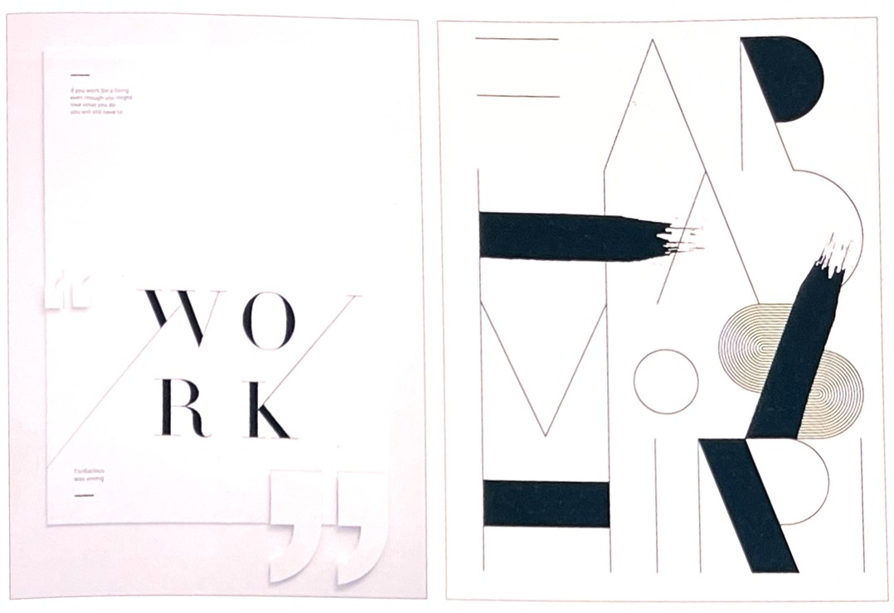
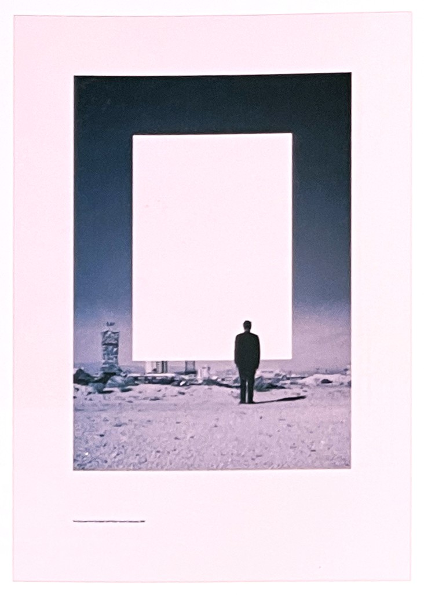
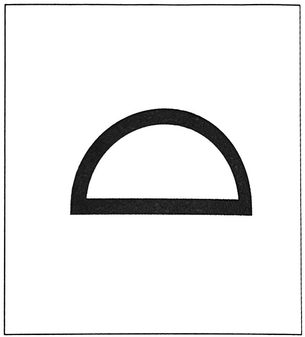
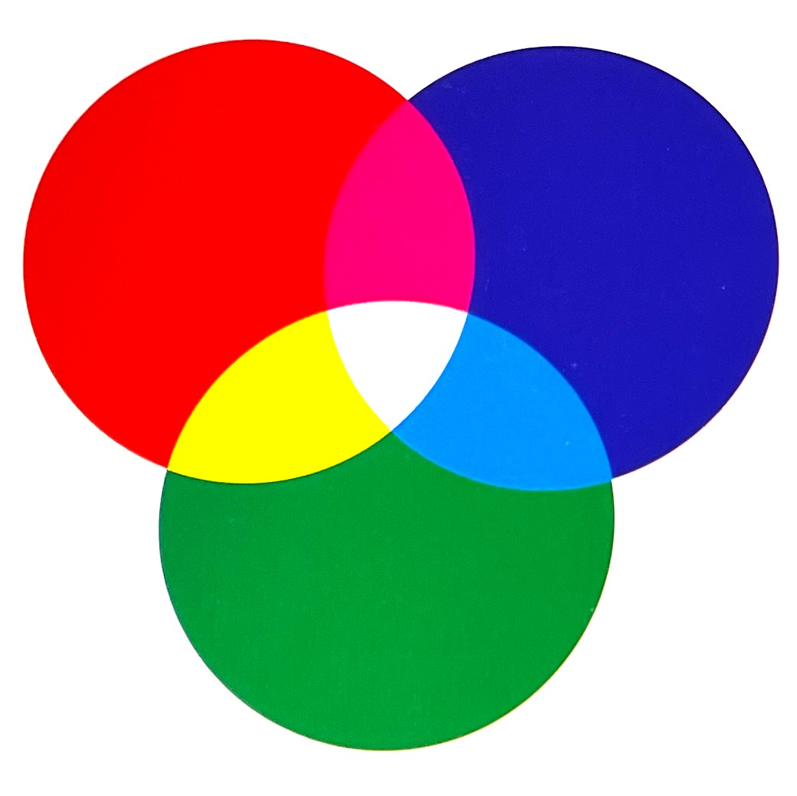
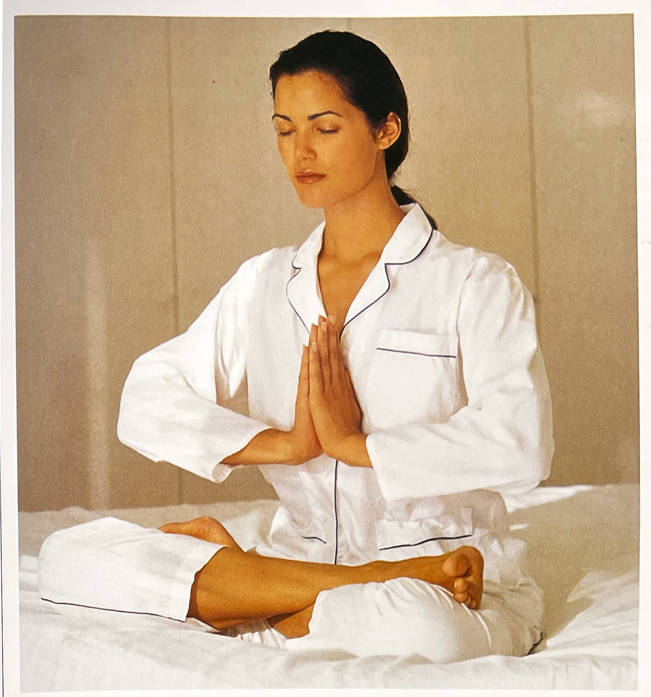

고급스럽고 세련된 분위기를 연출하는 작업에적합하며, 다른 색에 영향을 주지 않고 어울림이 좋아 무채색과 유채색에 모두 고르게 적용할 수 있다.
1. 색의 성격오랜 시간 만들어진 색상이 가지고 있는 성격 :
개성이 강함,이기적, 자기만의 세계를 고집, 보수적, 독립심, 의지가 강함
2. 색의 영향사람이 인지했을 때 느낌 :
차분, 당당, 공포. 불안, 허무, 이지적, 지적, 압박
3. 색의 처방색상을 의도적으로 활용할 수 있는 방법 :
경건함을 줌, 심리적인 기능 억제

(좌) * 흰색을 잘 표현하기 위해서는 주의 색상이 너무 강하게 표현되 않아야 한다. (우) * 흰색 배색은 검은색과 가장 대비됩니다.
Nylon Guys 2012, 흰색은 검은색과 더불어 공간감과 여백감을 주기에 더없이 좋습니다.흰색의 상징[4]
긍정적 감정과 상징:
용감, 순수함, 고귀함, 부드러운, 신, 지식, 평화, 삶, 깨긋함,
크림, 전사, 순결, 웨딩
부정적 감정과 상징:
약함, 부족, 텅빔
연상되는 자연/자연물:
눈, 얼음, 햇빛, 공기, 하늘, 구름, 안개, 면, 겨울, 우유, 뼈, 백설탕
정치.종교적 상징:
백인종, 항복
흰색의 사물은 다른 색과의 큰 대비감으로 그 표면에 묻은 오염물을 매우 선명하게 나타낸다. 그리하여 흰색은 순수함, 깨끗함 그리고 고귀한 종교적 의미와 관련이 있다. 중국, 베트남, 한국, 인도 등의 전통에서 슬픔과 죽음을 타타내는 색이다.
서양 결혼에서 흰색의 드레스는 순수함의 상징으로, 일본 결혼에서 흰색은 가족들과의 헤어짐과 새로운 가족과의 시작을 상징고 있다.
일부 아시아권에서 흰색은 죽음을 나나낸다. 고대 이집트에서 이 지역의 생명이 없는 사막을 나타내는 죽음의 색이기도 하다. 반면 이곳에서 검정은 생명을 나타낸다. 나일강의 범람으로 진흙으로 덮힌 비옥한 땅을 나타내며, 이집트를 키맷kemet 즉, 검은 땅이라는 명칭으로 불리어진 이유이다.
하양의 심볼
흰색의 힘[3]하얀색을 검정에 침투시켰기에 안심하고 집에 돌아갈 수 있었다. 괴테Johann Wolfgang von Goethe
우리가 살고 있는 현실 세계는 다양한 빛깔로 이루어진다. 여기에서 나오는 모든 빛은 한데 모여 하양이 된다. 그런데 하얀색 빛을 프리즘에 통과 시키면 여러 색이 분리되어 나온다. 여기서 우린 빛의 세계가 서로 다른 여러 색으로 이루어 졌다는 사실을 확인한다. 하양은 우리 일상에서 '진짜 색'이 아니다. 다양한 해석이 가능한 특수한 개념이다. 이 하양을 어떻게 해석하느냐는 각자 삶의 방식에 따라 다소 다르다.
검정은 고집이나 경직됨, 삶을 부정하는 태도를 쉽게 반대 모습으로 바꾼다. 그만큼 변덕스럽다. 그렇지만 자기 주도적이다. 하지만 검정과 대비되는 하양은 상반된다. 한마디로 어떤 사건의 해명, 도피, 항복을 연상케 한다. 예를 들면 전쟁이 한창알 때 어느 집에 내걸린 흰색 깃발이 그렇다. 그것은 누구나 알고 있는 항복의 표시다. 사람은 포기나 절망을 피하려고 한다. 이때 우리는 어떤 상황에서든 수동적 태도를 보인다. 그리건 아무 것도 바라지 않는다는 의미로 하얀색을 내보인다. 그 순간부터 판단이나 결정은 피상적으로 내려진다.
노이로제에 시달리는 사람이나 정신병 환자 그리고 사춘기 아이들은 충동적으로 검정과 하양을 한데 섞는다.
수천년 전에 쓰인 중국위 고서 '주역'은 음양으로 세계를 그리는데, 그 중 양을 '킨Kien'이라고 한다. 킨은 창조, 하늘, 등을 의미한다. 음은 '쿤Kun'이다. 이는 '맞아들임', '땅'을 뜻한다. 음양은 상반되어 보이면서도 서로 보완하는 관계다. 영혼과 자연, 하늘과 땅, 시간과 공간 등도 음양의 속성을 띤다.
고대 올림픽 경기에서 선수들이 입는 하얀색 옷에는 '어두운' 세계를 통과해 이상을 달성하는 의미가 숨어 있다. 흰 옷을 입은 남녀 운동선수들은 경기장에서 화해와 평화를 기원하는 마음으로 빛을 점화한다. 올림픽 성화는 이렇게 탄생했다. 그리스인은 죽음을 삶의 반대 의미로 해석했으며 성화는 횃불을 든 정령으로 그려졌다.
흰색이 지닌 또 다른 상징 언어는 결혼 예식에서 잘 드러난다. 신랑은 검정 예복을 입고 자신의 확고한 결정과 책임감을 신주와 축하객에게 확인시킨다. 그는 '죽음이 서러을 떼어놓을 때까지' 그 마음을 다할 것을 맹세한다. 여기에 대비해 신부는 하얀색 드레스로 순결함을 드러내고 자신에게 새롭게 주어진 역할에 최선을 다할 것을 공표한한다.
여기에 드러난 하양의 의미는 죄가없는, 순수, 자유다, 성모 마리아의 '고결한 출산''에서부터 정치가들이 거짓이나 과장을 진실로 가장하기 위한 미사어구, 즉 '하얀 조끼'에 이르기까지 모두 이러한 뜻이 담겨져 있다.
하양은 시작을 암시한다. 희고 깨끄한 종이나 캔버스는 미술가에게 창작의 시작이다. 또한 커다란 도전이기도하다. 잘못 찍은 점이나 선은 작품 전체를 망칠 수도 있기에 그렇다.
어떤 경우이든 하양에 검정이 어울리는 형태는 강한 대비감을 불러 일으킨다. 이들의 명도 차이는 긴장감을 만들어 내다. 자유로운 성향의 하양과 주위를 억압하는 검정이 함께 짝을 이루는 모양새 탓이다. 그러나 우리는 항상 이러한 긴장 속에 살고 있으며, 또한 이 긴장에 익숙해져 있다.
물의 산란[1]수소와 산소로 구성된 물 분자는 빨강, 주황, 노랑빛을 흡수하고 파랑, 녹색빛을 반사한다. 물이 일반적으로 청록색을 띠는 주된 이유다. 물은 빛을 흩뿌리고 반사학나 반사 속성을 지닌 물질들로 가득 차 있다. 하늘의 색, 물에 있는 파도의 양, 그리고 하루 중, 연중 어느 때인지에 따라 물의 색상이 달라질 수 있다.
물의 원래 색조와 상관없이 우리가 물줄기에서 그토록 많은 흰색 파도와 포말을 보게 되는 이유는 무엇일까?
물론 빛 산란 효과가 작용한 것이다. 이 경우 원형 물거품도 적용된다. 각각의 물거품이 마치 풍선껌을 부는 아이들처럼 무지개나 빛을 분산시키지만 거품이 많은 경우에는 그 파장으로 백색광이 형성된다.
눈과 산란 효과[1]물은 정해진 형체없이 자기 모습을 마음대로 바꾼다. 액체, 가스, 고체 상태인지에 따라 그 형태나 반사 양식이 다양하다.
방금 내린 눈이 얇게 덮여 있는 밖으로 나가 보면 그야말로 '눈이 부셔 제대로 볼 수 없게' 될 수 있다. 햇빛이 눈을 비추면 전체 파장이 거의 그대로 우리를 향해 반사된다. 눈은 마치 올림픽 탁구 경기에 나간 선수들처럼 빛을 튕겨내는 작은 결정체로 만들어져 있다. 이렇듯 표면에 부딪혀 반사된 빛은 밀도가 낮은 눈을 쉽게 통과한다.
빙하의 반사[1]빛이 빙하를 비출 때는 눈의 표면에 부딪혀 반사되는 것과 달리 빛을 전혀 튕겨내지 않는다. 대신 빛이 빙하의 단단한 결정체 내부에 갇혀 스펙트럼에 있는 모든 색상으로 굴절된다. 이때 스펙트럼의 빨간색 쪽에 있는 빛의 저에너지 파장은 느슨하고 성기게 압축된 결정체에 의해 흡수되는 반면 스펙트럼사의 파란색과 보라색 쪽에 있는 고에너지 파장은 흡수되지 않는다. 그 결과 빙하의 청록색이 만들어지게 된다. 이러한 색은 산란 효과가 가장 강력한 빙하의 금이나 틈새에서 더욱 선명하게 드러난다.
우리가 빨강이나 주황으로 인식하는 빛의 파장은 뉴지랜드 태즈먼 빙하의 성긴 결정체를 통과하기에는 에너지가 너무 적다. 여기서는 우리가 초록, 파랑, 보라로 인식하는 고에너지 파장만 통과시켜 놀랍도록 아름다운 청록색을 창출해낸다.
흰색의 심리학[2]흰색은 스펙트럼을 구성하는 모든 색을 포함한다. 광채와 마찬가지로 흰색은 각 색상을 동일한 양으로 함유하고 있다. 하지만 광채와는 달리 흰색은 밀도를 가지고 있다. 흰색 종이를 빛에 비춰볼 경우 그것을 통해 볼 수는 없으나, 광채의 경우에는 볼 수 있다. 흰색의 기본적인 특징은 동일성이다. 즉, 흰색 속에는 모든 색상이 동일하게 들어 있다.
흰색 성향을 지닌 사람은 이성적이어서 신뢰할 수 있고, 희망을 불러 일으키는 평온함이 있다. 또한 이들은 공정성과 일관성을 보여주며, 순수한 마음을 갖기 위해 노력한다. 이들은 차별을 싫어하고, 모든 인류를 동등하게 여긴다.
흰색은 모든 거지된 것을 폭로하고 이를 몰아내기 위해 노력하나, 모든 것을 용서하는 성질을 지니고 있다. 흰색 성향의 사람들은 구석구석 어두운 곳에 빛을 발산한다. 모두가 화합하고 조화할 수 있도록 하며 진실을 볼 수 있도록 눈을 덮고 있는 것을 제거하기도 한다. 말을 타고 달려오는 백기사(騎射), 질병으로부터 우리를 구해주는 흰 가운을 입은 의사, 백마를 타고 흰 모자를 쓰고 나타나는 카우보이! 이들은 항상 적당한 때에 모습을 드러내는 사람들이다. 흰색 성향의 사람들은 조금 냉정해 보이나 유능한 사람들이다.
하지만 흰색에도 단점은 있다. 어떤 면에서 보면 희망을 불러일으키는 특징도 있지만, 흰색의 셰드 색상(회색)이 바로 이 색의 최대 적으로서, 고독감을 야기하는 특징을 지니고 있다.
하얀 빛은 스펙트럼을 이루는 모든 색깔로 구성되어 있다.
흰색은 정확성을 요구하는 지업에 적합한 생상이다.
평온함과 정화 작용을 위해 흰색을 활용하여 명상해 보라.
하얀색으로 표현된 패션[4]하양은 무채색으로 거의 모든 패션분야에서 기본색으로 사용되고 있다. 검정과 함께 하양은 형태미를 강조하는 아방가르드 스타일의 패션에 가장 적합한 색이다. 여성복에서는 풍부한 색감과 장식을 배제한 미니멀리즘을 대표하는 주요색이다. 남성복에서는 검정이나 짙은 파랑이 대중적으로 많이 적용되고 있으나, 전체 흰색으로 연출한 스타일로 강한 카리스마를 나타내기도 한다.(예, 엘비스 프레슬리)
노랑이나 붉은 계열과의 혼합으로 부륻럽고 따스한 이미지를, 초록이나 파랑 계열과의 혼합으로 시원하고 상쾌한 이미지를 연출할 수 있다.
하얀색 인테리어[4]하얀색은 가장 다양하게 사용되고 대중적으로 사용되는 인테리어 디자인의 색이다. 집안을 깨긋하고 시원하며 밝은 이미지를 주며, 하얀 공간에 다른 색들과 함께 적절히 사용하여 하얀 캔버스의 화폭같은 이미지를 연출할 수 있다. 벽, 가구 등에 사용된 흰색은 깨끗함과 우아함을 나타내지만 흰색 한 가지만 사용하면 지나치게 단조롭고 차가운 느낌을 준다. 그러므로 연출하고자 하는 의도에 따라 소프트, 라이트, 비비드 등 다채로운 톤의 색과 함께 사용하는 것이 좋다.
현대적 인테리어를 연출하고자 하면 강하게 대비되는 검정이나 채도가 높은 레드, 오렌지, 옐로우 등을 사용한다. 그리고 물을 연상시키는 블루, 숲의 그린 등의 색과 함께 현대적이면서도 자연의 시원함과 신선한 이미지를 전달할 수 있다. 그리고 라이트, 페일 톤의 분홍이나 블루, 아쿠아 블루, 옐로우와 함께 사용된 흰색 인테리어는 사랑스럽고 포근한 느낌의 공간 이미지를 연출한다.
[참고문헌]
[1] 컬러, 그 비밀스러운 언어 COLOR, 조앤 액스터트, 아리엘 엑스터트, 신기라 옮김, 시그마 북스, 2014.9.10.
[2] 몸과 마음을 치료하는 색채, 릴리안 베르너 본즈, 번역 한창환, 도서출판 국제, 2008.1,10.
[3] 색의 힘, 하랄드 브램, 번역 이재만, 일진사, 2010.5.20.
[4] 색채 기획을 위한 색이야기, 김문여 김봉섭 안희정, 교학연구사, 2011. 6.30.
[5] 좋아 보이는 것들의 비밀 편집&그리드, 이민기 지음, 길벗, 2015.5.1.
[6] 색채 디자인 교과서, 문은배 지음, 길벗, 2010.12.28
....
....
....